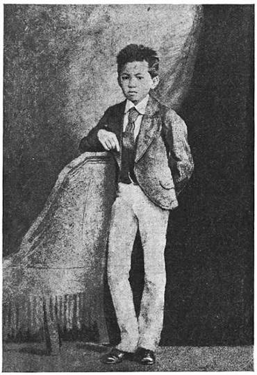
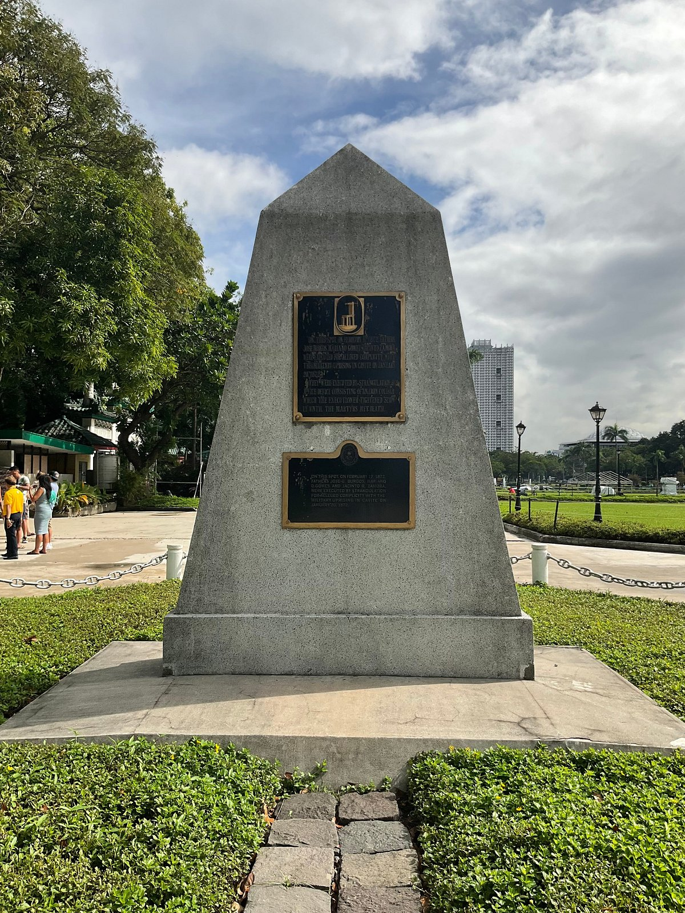
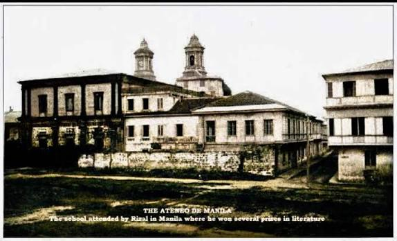
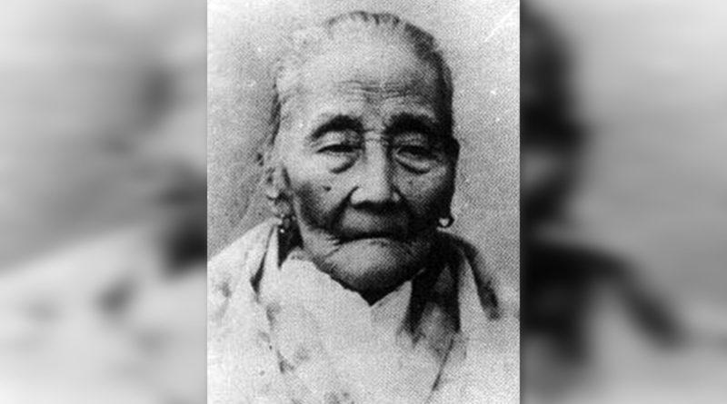
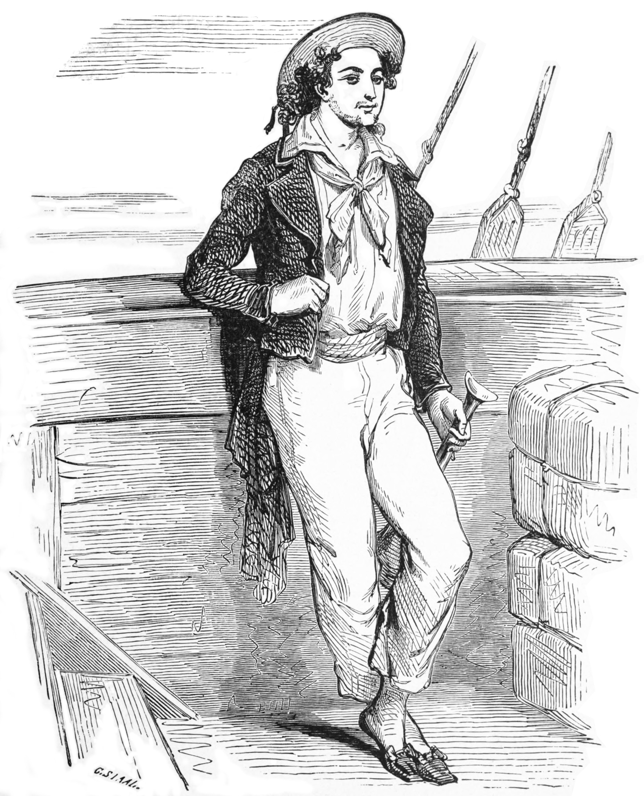
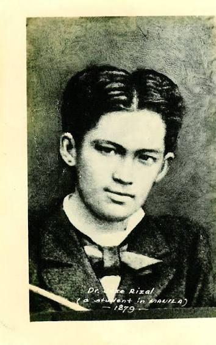
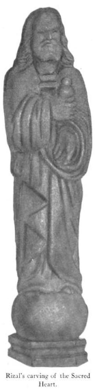

Chapter 4 · Reporter No. 1
Scholastic Triumphs
at Ateneo de Manila
How an eleven-year-old provinciano from Calamba, arriving in a city still shadowed by execution and imprisonment, became “the pride of the Jesuits” — the making of José Rizal, 1872–1877.
Ateneo Municipal de Manila · Intramuros

1872
01 · Introduction
A Boy Sent to Manila
In February 1872, three Filipino priests — Mariano Gómez, José Burgos, and Jacinto Zamora, remembered together as GomBurZa — were garroted at Bagumbayan on charges of subversion. Rizal’s own brother, Paciano, had once lived and studied under Father Burgos’s roof.
That same year their mother, Doña Teodora Alonso, was still in prison on a fabricated poisoning charge, having been made to walk miles to the provincial jail. It was into this charged, watchful season — four months after the executions — that ten-going-on-eleven-year-old Jose was sent from Calamba to Manila to continue his schooling.
The school waiting for him: the Ateneo Municipal de Manila had begun in 1817 as the Escuela Pía, a charity school for poor boys; passed to city administration in 1831; and was handed to the Society of Jesus in 1859, renamed Ateneo Municipal in 1865. It was the long-standing rival of the Dominican-run Colegio de San Juan de Letran.

Marker at the 1872 Gomburza execution site, Bagumbayan — now Rizal Park, Manila. Wikimedia Commons.
1872

Marker at the original Ateneo Municipal site, Intramuros, Manila. Wikimedia Commons.
02 · June 1872
Rizal Enters the Ateneo
- June 10, 1872
Jose, escorted by his brother Paciano, sits entrance exams — Christian Doctrine, arithmetic, reading — at the Colegio de San Juan de Letran, and passes.
- A change of plan
His father Francisco had first favored Letran. At the last moment, he chose the Jesuits’ Ateneo instead.
- Turned away, at first
Registrar Fr. Magín Ferrando refused him: he had arrived late for registration, and looked too frail and small for an eleven-year-old.
- A name is chosen
With help from Manuel Xerez Burgos — nephew of the executed Fr. José Burgos — Jose is admitted, enrolling under a new surname, Rizal, since “Mercado” had drawn official suspicion.
- A room outside the walls
He boards on Calle Caraballo, a 25-minute walk from Intramuros, with a spinster named Titay who owed the Mercado family ₱300.
My family never paid much attention to our second surname, but now I had to use it, thus giving me the appearance of an illegitimate child!— Rizal, recalling the moment he enrolled as “Rizal”
03 · The Jesuit System of Education
Two Empires at War for a Grade
The Jesuits ran the Ateneo on the old ratio studiorum — rigid discipline braided with constant incentive, “ad majorem Dei gloriam.” The day opened and closed in prayer; students heard Mass before class. Beyond religion, the curriculum reached into humanities, science, and physical culture, with vocational tracks in agriculture, commerce, mechanics, and surveying feeding into the Bachelor of Arts.
To sharpen competition, every class was split into two rival “empires” — and any student, however lowly ranked, could challenge an officer above him to answer the day’s lesson.
- Emperor
- Tribune
- Decurion
- Centurion
- Standard-Bearer
- Emperor
- Tribune
- Decurion
- Centurion
- Standard-Bearer
Three wrong answers, and a challenged officer lost his rank on the spot. Rizal — a day student — began at the very last line of the Carthaginians.
1872–73
04 · First Year in Ateneo
Last in Line, Then First
His first professor, Fr. José Bech — Rizal later described him as “tall, thin… an ascetic face, severe and inspired, small deep-sunken eyes.” Knowing little Spanish, Jose began at the very tail of the Carthaginian line.
Within a month he had climbed to Emperor, the best in his class. To sharpen his still-shaky Castilian, he paid three pesos for private lessons at Santa Isabel College during the noon recess. He closed the first quarter marked “Excellent” — then eased off in the second half, stung by a teacher’s remark, and finished the year in second place, grades still Excellent.
José Rizal, age 11 — the year he entered the Ateneo. Public domain, Wikimedia Commons.
1873
05 · Summer Vacation
A Vacation Without Joy
Back in Calamba for the school break, Jose could not fully enjoy it — his mother was still imprisoned in Santa Cruz.
His sister Saturnina, “Neneng,” brought him along to Tanaúan to lift his spirits. And at least once, without telling his father, he made the walk to the jail himself, just to see Doña Teodora.
1873–74
06 · Second Year in Ateneo
Second Year, Regained
Back in Manila, he now boarded inside the Walled City itself — at No. 8 Calle Magallanes, under a landlady the students called Doña Pepay. He slipped early in the term, then repented and studied harder, reclaiming the rank of Emperor by year’s end.
Three old classmates from Biñan — schoolmates under Maestro Justiniano years before — turned up in his class that year. He closed the term with excellent marks across every subject, and a gold medal to show for it.
INTERPRETED

Doña Teodora Alonso, Rizal’s mother. Public domain, Wikimedia Commons.
07 · A Mother’s Prophecy
The Prophecy of a Mother’s Release
On a visit home, Doña Teodora told her son of a dream from the night before. Jose, comparing himself — half in earnest — to the biblical Joseph reading Pharaoh’s dreams, told her she would be freed within three months.
She had already endured two and a half years of appeals over a poisoning charge invented by a jealous relative. The three months passed — and not long after Jose’s third year began, she walked free, exactly as he had foretold.
1874

Edmond Dantès from Dumas’s The Count of Monte Cristo — the novel that thrilled young Rizal. Engraving by G. Staal, 1888. Public domain.
08 · Teenage Interest in Reading
A Reader Awakens
That vacation, one novel changed him: The Count of Monte Cristo, by Alexandre Dumas. Edmond Dantès’s unjust imprisonment, his escape from the Château d’If, the buried treasure, the long, patient revenge — it seized his imagination and never entirely let go.
Imagine how a romantic youngster of twelve would delight in the Count of Monte Cristo!— Rizal, in his own memoir
Beyond fiction: He talked his father into buying César Cantú’s multi-volume Universal History, and devoured Feodor Jagor’s Travels in the Philippines — struck by its eerie prophecy that Spain would one day lose the archipelago to the United States.
1874–75
09 · Third Year in Ateneo
A Quieter Term
Shortly after classes opened, his mother’s release — foretold the year before — finally came true.
Academically, though, this was not Rizal’s sharpest year. His spoken Castilian, he admitted, was “not fluently sonorous” enough, and the Spanish-language medal went instead to a classmate who spoke it as his mother tongue.
1875–76
10 · Fourth Year in Ateneo
A New Mentor, A New Discipline
On June 16, 1875, Rizal became a boarder — an interno — for the first time. His new professor, Fr. Francisco de Paula Sánchez, would leave the deepest mark of any of his Ateneo teachers.
Rizal called him “a model of uprightness, earnestness, and love for the advancement of his pupils,” and it was Sánchez who first urged him to take his verse seriously. He topped every classmate that year and returned to Calamba in March 1876 with five gold medals to lay before his parents.
1876–77

José Rizal, age 16 — his graduation year. Public domain, Wikimedia Commons.
11 · The Last Year
In a Blaze of Glory
Rizal returned to Manila in June 1876 for his final year and simply excelled — top marks in philosophy, physics, biology, chemistry, languages, mineralogy.
Classmates and Jesuits alike were calling him the most brilliant Atenean of his generation: “the pride of the Jesuits.”
CLASS
12 · Extra-Curricular Activities in Ateneo
Beyond the Classroom
Marian Congregation
Active member, later Secretary; devoted to the Immaculate Conception, the Ateneo’s patroness.
Academy of Spanish Literature & Academy of Natural Sciences
Exclusive societies open only to the school’s top scholars.
Painting
Lessons under the Spanish painter Agustín Sáez.
Sculpture
Lessons under the noted Filipino sculptor Romualdo de Jesús.
Gymnastics & Fencing
Trained under his sports-minded uncle, “Tío” Manuel, to strengthen a frail constitution.
An Emperor, and a Leader
Top of the class inside it, campus leader outside it — though Fr. José Vilaclara once urged him to stop “communing with the Muse” and give more hours to philosophy and natural science.

The Sacred Heart of Jesus, carved by Rizal in batikuling wood at age 14 with a pocket knife. From Austin Craig, 1913. Public domain.
13 · Sculptural Works in Ateneo
Carved in Batikuling
With nothing but a pocket-knife and a block of batikuling hardwood, Rizal carved an image of the Virgin Mary so fine it startled his Jesuit professors. Impressed, Fr. José Lleonart asked for a Sacred Heart of Jesus next; days later, Rizal delivered a nine-inch statuette.
Lleonart meant to carry it home to Spain but, absent-minded, left it behind. The boarding students mounted it above the dormitory door, where it stayed for twenty years — a quiet honor to their school’s greatest alumnus.
Other times, Brother, other times. I no longer believe in such things.— Rizal, on seeing the carving again years later, as a young liberal
Yet decades on, awaiting execution in Fort Santiago, Rizal asked a visiting Jesuit whether the little carving still existed. Fr. Luis Viza drew it from his cassock pocket — he had guessed rightly and brought it along. Rizal kissed it and set it on the table where he wrote Mi Último Adiós.
RECORD
14 · Anecdotes on Rizal, the Atenean
Boyhood, Off the Record
Struck, and Silent
Classmates Mansano and Lesaca once hurled books at each other in the study hall; one caught Rizal square in the face and drew blood. He didn’t cry out — he simply let his classmates walk him to the infirmary. A schoolmate, Felix M. Roxas, remembered it as an early sign of Rizal’s forbearance and forgiveness.
A Debt Repaid in Kindness
Rizal briefly boarded with the family of Manuel Xerez Burgos — the very student whose help had gotten him admitted to the Ateneo — a small, quiet loyalty to someone who had once taken a risk for him.
A Kite, and a Homesick Boy
Not every Atenean wore the crown easily: a younger boarder from Iloilo, Julio Meliza, was once found in tears over nothing grander than a lost kite — a reminder that “emperors” were still children.
The mother who first noticed the gift. Public domain, Wikimedia Commons.
15 · Poems Written in Ateneo
First Verses
It was his mother who first noticed the gift, and who first encouraged Jose to put his feelings into verse; it was Fr. Sánchez who later gave it discipline.
16 · Dramatic Work in Ateneo
A Stage Built on Jesuit Latin
Rizal’s two surviving plays carry the date 1880 — by then he was nineteen and studying at the University of Santo Tomas — but both grew directly out of his Ateneo grounding, and one was written for the Ateneo stage itself.
Junto al Pasig
(Beside the Pasig) — a one-act zarzuela in traditional octosyllabic Spanish verse, staged by Ateneo students on December 8, 1880, for the school’s patronal feast, the Immaculate Conception. Rizal wrote it as president of the Ateneo’s own Academy of Spanish Literature.
El Consejo de los Dioses
(The Council of the Gods) — the gods of Olympus convene to judge the greatest writer of all: Homer, Virgil, or Cervantes. Entered in a Manila contest marking Cervantes’s death centennial, it won first prize.
Con el recuerdo del pasado entro en el porvenir.“With the memory of the past, I enter the future.” — Rizal’s epigraph for El Consejo de los Dioses
José Rizal, age 16. Public domain.
Segunda Katigbak, Rizal’s first love. Public domain.
17 · First Romance of Rizal
The First Romance
Days after graduation, sixteen-year-old Jose visited his grandmother in Trozo, Manila, with his friend Mariano Katigbak. Mariano had brought his sister — fourteen-year-old Segunda Katigbak, a Batangueña from Lipa, boarding at La Concordia College, where Rizal’s own sister Olimpia studied.
He described her later as having “eyes that were eloquent and ardent at times and languid at others… an enchanting and provocative smile.” Asked to sketch her portrait, he obliged — reluctantly, he claimed — though he kept visiting his sister at La Concordia every week, just to see Segunda again.
It went nowhere: she was already promised to a townmate, Manuel Luz. Too proper, too shy, to compete for her, Rizal quietly let it go.
Ended, at an early hour, my first love! My virgin heart will always mourn the reckless step it took on the flower-decked abyss.— Rizal, recording the end of his first romance
18 · End of Record
Closing the Ateneo Chapter
In five years, an undersized eleven-year-old externo had climbed from the last name on the Carthaginian roll to a Bachelor of Arts with highest honors — sculptor, poet, playwright-in-waiting, “the pride of the Jesuits.”
The next chapter would take him across Intramuros to the University of Santo Tomas — and, before long, across an ocean.
Subject: Rizal at the Ateneo Municipal de Manila, 1872–1877
Status: Bachiller en Artes, con notas de sobresaliente
Sources: José Rizal’s own Memorias de un Estudiante de Manila; standard biographical accounts of Rizal’s Ateneo years (Zaide & Zaide, Coates, Guerrero); photographs courtesy of Wikimedia Commons, public domain.